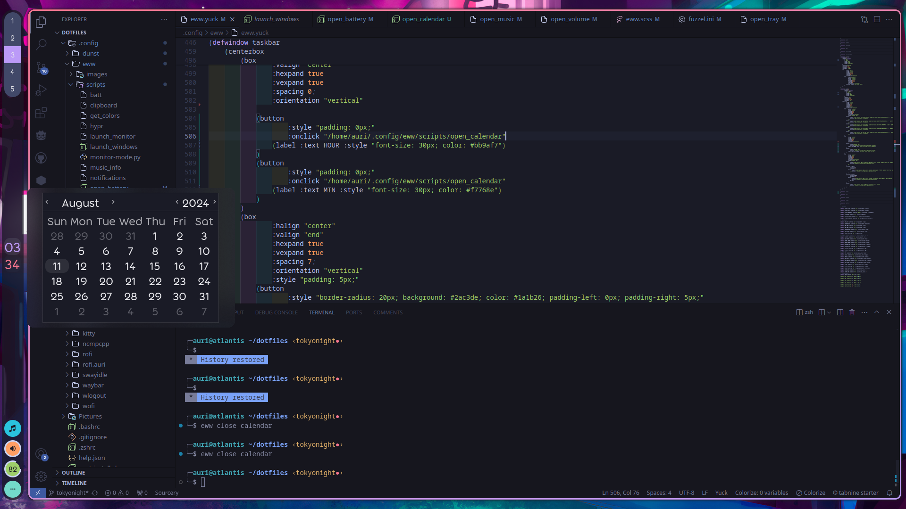
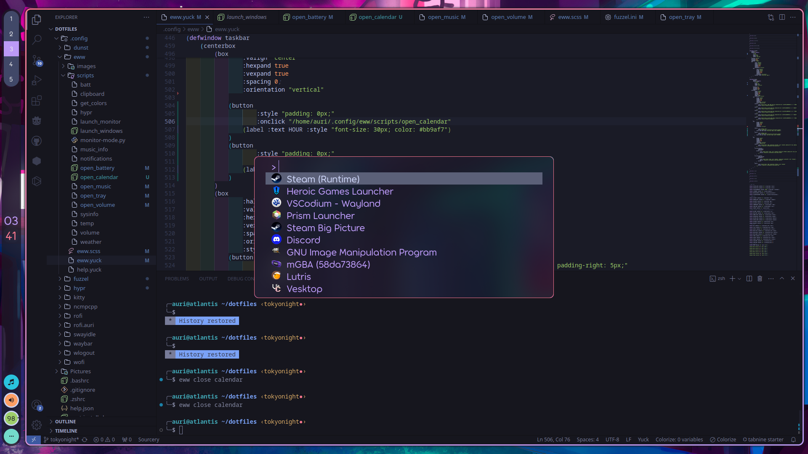
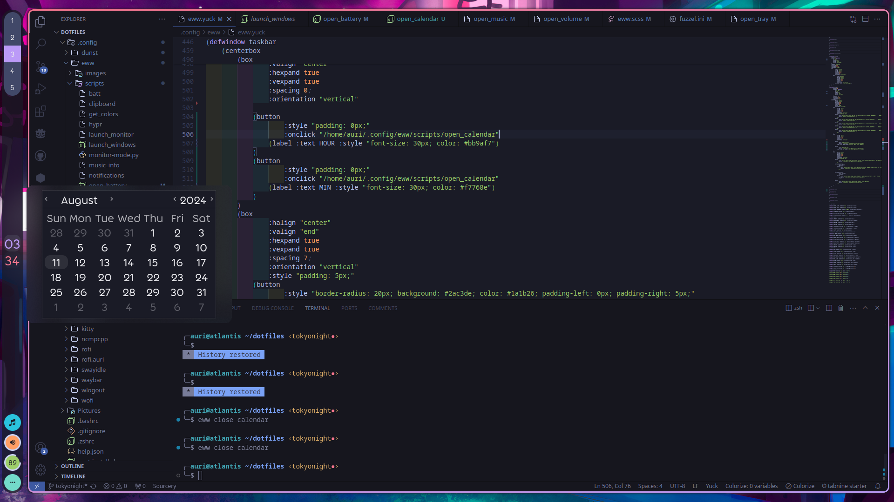
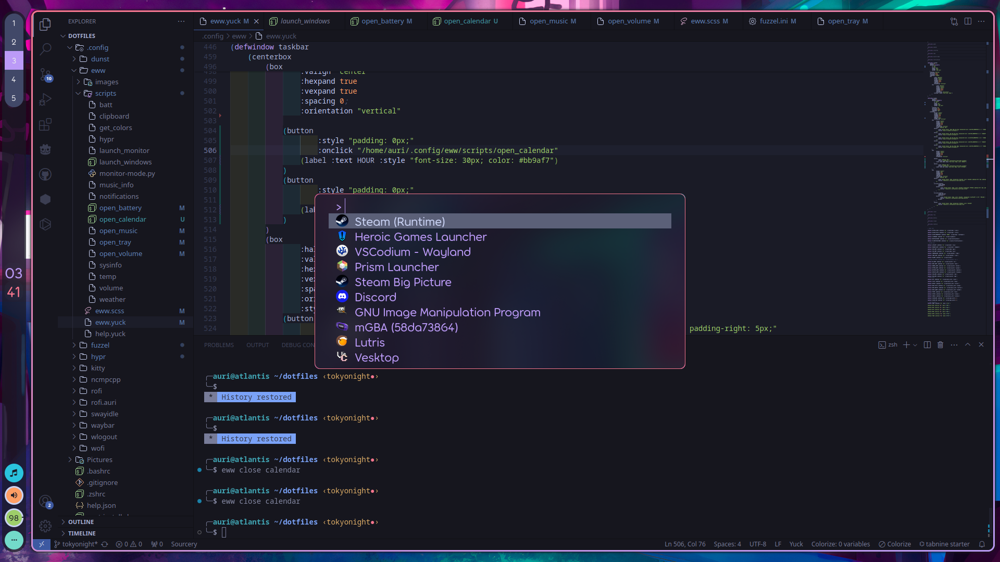

Hey there! I'm Aurelia. Big nerd, bookworm, FOSS enthusiast, aspiring game dev. zI'm a skilled developer with over 10 years of experience in Python and a strong background in web technologies like HTML, CSS, and UX design. I am also adaptable and can learn new libraries and skills quickly.
I'm well-versed in Linux, Bash scripting, and Git, with more than 4 years of experience in each. I have extensive experience in Unity (5+ years) and have been exploring Godot for the last 2 years.
My strengths include problem-solving, critical thinking, and resiliency, allowing me to tackle challenges effectively. I thrive in cross-functional teams, bringing technical skills and a collaborative spirit to every project. I'm also familiar with basic computer hardware, adding to my well-rounded tech expertise.
 


